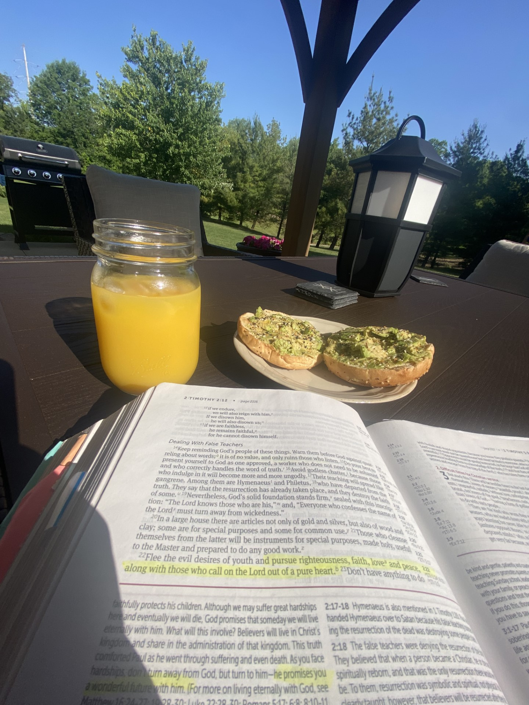

"But God, being rich in mercy, because of the great love with which he loved us, even when we were dead in our trespasses, made us alive together with Christ -by grace you have been saved-" (Ephesians 2:4).
